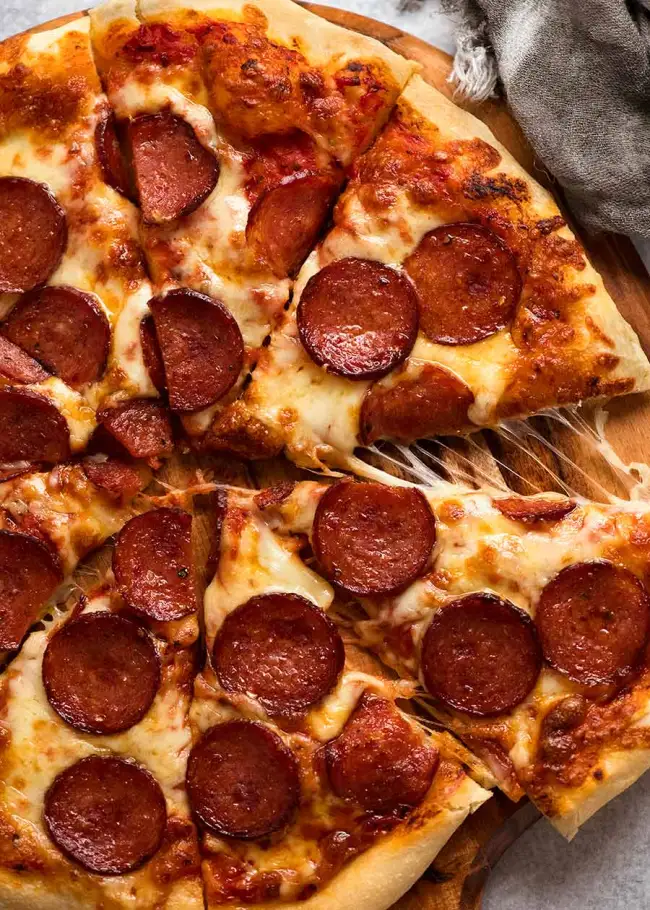

Pizza Recipe
Homemade pizza with pepperoni, in all the right places!
Ingredients
Dough
- 2 cups all-purpose flour, plus more for surface
- 1/4 cup medium-grind cornmeal
- 1 1/2 tsp.kosher salt
- 1 tsp. instant yeast
- 1/2 tsp. granulated sugar
- 1 cup lukewarm water
- 2 tsp. extra-virgin olive oil, plus more for bowl
Pizza
- 1 (14-oz) can whole tomatoes, drained
- 2 tsp. extra-virgin olive oil, plus more for drizzling kosher salt
- All-purpose flour, for surface
- Medium-grind cornmeal, for dusting
- Pinch of dried oregano
- Pinch of red pepper flakes
- 1 clove garlic, thinly sliced
- 2 cups shredded low-moisture mozzarella, divided
- 1 cup finely grated parmesan, divided
- Sliced onion,banana peppers,pepperoni, or whatever topping you wish!
Directions
Dough
- Step 1
In a large bowl, whisk flour, cornmeal, salt, yeast, and granulated sugar until combined. Add water and oil and mix until a shaggy dough forms.
- Step 2
Transfer dough to a lightly floured service and knead until dough smooth, moist but not wet, and can be formed into a ball, 2 to 3 minutes.
- Step 3
Divide dough into 2 equal pieces and form into balls. Place in 2 large, oiled bowls and cover with plastic wrap; let proof at room temperature at least 3 hours, or transfer refrigerator and proof overnight or up to 48 hours.
Pizza
- Step 1
In a food processor or blender, process tomatoes, oil, and a few pinches of salt until smooth. Adjust seasoning if necessary.
- Step 2
Place a piece of parchment under a 12" cast-iron skillet and trace out the bottom so you know how large your pizza needs to be. Transfer skillet to oven and preheat to 500º, letting skillet get ripping hot.
- Step 3
If dough has been in fridge, let sit at room temperature 30 minutes. Transfer first ball of dough to a lightly floured service. Using your fingers, pound and shape into a circle. Using a rolling pin, roll out dough to fit parchment circle you’ve traced.
- Step 4
Carefully remove skillet from oven and sprinkle bottom with a few pinches of cornmeal. Transfer dough to skillet and slightly press down so cornmeal sticks to dough.
- Step 5
Working quickly, ladle 3 tablespoons sauce into center of dough. Using back of ladle, spread sauce over pizza to edges. (You shouldn't see any dough here; we want no crust visible after pizza has cooked.) Scatter a few slices of garlic over sauce and dust with oregano and red pepper flakes.
- Step 6
Cover pizza with half of mozzarella and half of Parmesan, making sure cheese reaches edges of pizza and even hits sides of skillet. Add desired toppings.
- Step 7
Drizzle a bit of oil around edges of dough so it flows under pizza and gets crispy. Transfer to oven and bake until cheese in center is melted and bubbly and cheese on end has started to crisp and even burn slightly, 10 to 15 minutes, depending on the strength of your oven.
- Step 8
Using a spatula, transfer pizza to a cutting board. Cut pizza into squares and serve immediately.
- Step 9
Repeat with remaining dough and ingredients.
Go back